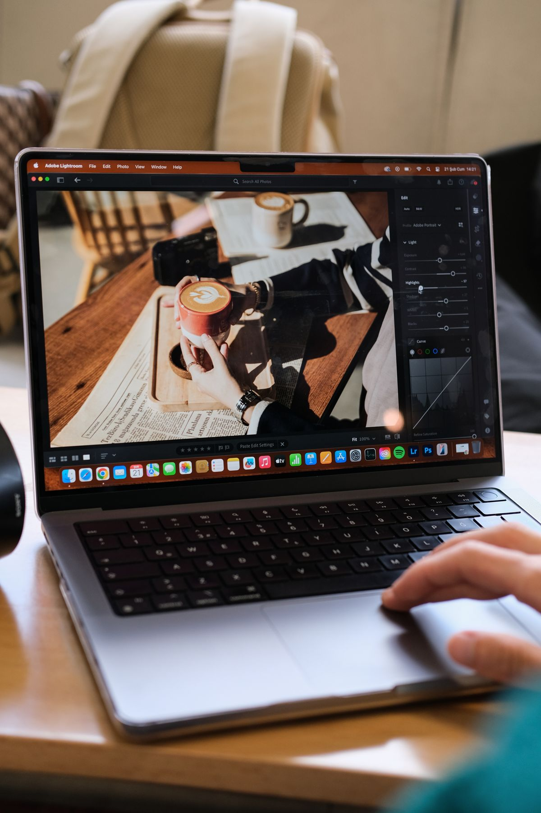
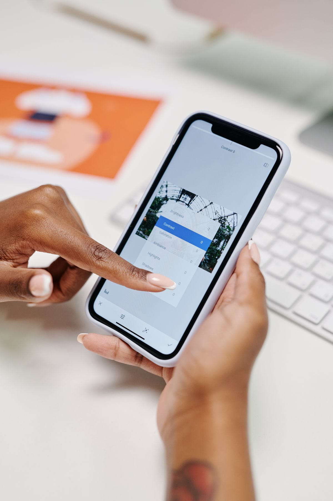
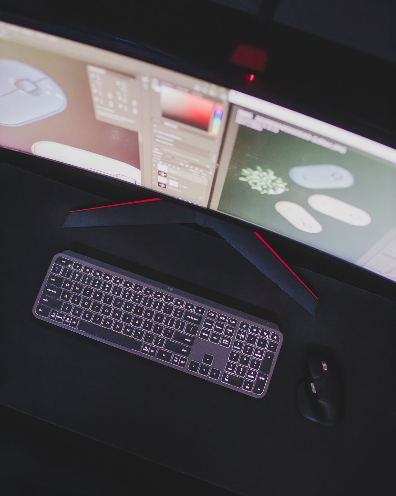

Inilah cara pakai Photoshop gratis tanpa langganan lewat jalur resmi Adobe. Photoshop desktop kini bisa kamu unduh dan buka gratis tanpa kartu kredit sejak September 2026. Cukup masuk dengan alamat email, kamu sudah bisa memakai Firefly Image Editor di dalamnya. Tapi jujur saja, ini bukan Photoshop lengkap yang gratis selamanya.
Sejak September 2026, Adobe membuka akses Freemium ke Photoshop desktop versi 27.11. Kamu bisa mengunduh aplikasinya dari situs resmi Adobe, masuk dengan alamat email, dan langsung memakai Firefly Image Editor tanpa memasukkan kartu kredit. Di dalamnya kamu bisa membuat gambar dari teks, mengedit foto dengan perintah bahasa sehari-hari, dan mencoba pratinjau pengalaman Photoshop lengkap sebelum memutuskan naik ke langganan. Jatah generasi AI gratisnya diperbarui harian, jadi kamu bisa kembali keesokan harinya bila jatah hari itu habis. Selain jalur desktop, aplikasi Photoshop di HP juga gratis diunduh dan fitur dasarnya bisa dipakai tanpa langganan, sementara Photoshop versi web tetap berbayar dan hanya bisa dijajal lewat uji coba 7 hari yang meminta detail pembayaran. Jadi Photoshop asli memang sudah bisa dipakai gratis, tapi versi gratisnya terbatas pada fitur AI Firefly dan pratinjau, bukan semua perkakas profesionalnya. Per November 2026, langganan Photoshop single-app dihargai 22,99 dolar AS per bulan pada paket tahunan.
Apa yang gratis di Photoshop desktop sekarang?
Jawaban singkatnya, yang gratis adalah pintu masuknya, bukan seluruh isi aplikasinya. Pada September 2026 Adobe merilis Photoshop desktop versi 27.11 dengan akses Freemium. Kamu bisa mengunduh dan masuk ke Photoshop desktop hanya dengan alamat email, tanpa langganan dan tanpa kartu kredit. Begitu masuk, kamu bisa membuka Firefly Image Editor di dalam Photoshop. Di sana kamu bisa membuat gambar dari perintah teks, mengubah foto dengan kalimat sehari-hari, menghapus objek yang mengganggu, dan mengganti latar foto. Setiap hari kamu mendapat jatah generasi AI gratis, dan jatah itu diperbarui keesokan harinya. Adobe juga memberi pratinjau pengalaman Photoshop lengkap supaya kamu bisa merasakan antarmuka dan alurnya sebelum memutuskan berlangganan. Perkakas lengkapnya tetap butuh langganan, jadi Freemium ini paling pas buat kamu yang mau belajar, mencoba fitur AI Adobe, atau mengedit foto sesekali tanpa keluar uang.
Caranya:
- Buka halaman Photoshop di situs resmi Adobe.
- Pilih tombol mulai gratis dan buat akun Adobe dengan alamat emailmu, atau masuk bila sudah punya.
- Unduh dan pasang aplikasi Photoshop desktop, lalu masuk dengan akun yang sama.
- Buka Firefly Image Editor dari dalam Photoshop.
- Tulis perintah editmu dan pakai jatah generasi AI harianmu.

Bagaimana cara memakai Photoshop gratis di HP?
Kalau kamu lebih sering mengedit di HP, ada jalur kedua yang tidak kalah resmi. Adobe menyediakan aplikasi Photoshop gratis untuk iPhone, iPad, dan Android. Aplikasi ini gratis diunduh, dan fitur dasarnya bisa langsung dipakai tanpa langganan: lapisan, seleksi, retouching, dan hapus latar. Itu sudah cukup untuk memperbaiki foto liburan, membuat potongan gambar untuk media sosial, atau merapikan hasil jepretan sebelum diunggah. Fitur yang lebih berat, seperti perkakas AI lanjutan, baru terbuka setelah kamu berlangganan. Caranya sederhana: unduh aplikasinya dari toko aplikasi resmi di HP-mu, masuk dengan akun Adobe, lalu buka foto yang mau diedit. Satu peringatan penting: unduh hanya dari toko aplikasi resmi. Situs yang menawarkan Photoshop full version gratis di luar toko resmi biasanya menyebar aplikasi bajakan atau berisi malware.

Apakah Photoshop versi web juga gratis?
Jawabannya tidak. Menurut penjelasan resmi Adobe, tidak ada versi gratis Photoshop di web. Photoshop versi web termasuk dalam paket berbayar, jadi kamu tidak bisa membuka dan mengedit fotomu sendiri di browser tanpa langganan. Kalau kamu mau menjajal versi lengkapnya, Adobe menyediakan uji coba 7 hari untuk aplikasi desktop dan web. Uji coba ini memberi akses penuh, tapi kamu wajib memasukkan detail pembayaran saat mendaftar, dan langganan aktif otomatis sesudah 7 hari bila kamu tidak membatalkannya. Jadi bila hanya mau coba-coba, catat tanggal berakhirnya dan batalkan dari akun Adobe-mu sebelum hari kedelapan. Sesudah masa uji coba, langganan Photoshop single-app dihargai 22,99 dolar AS per bulan pada paket tahunan yang ditagih bulanan, per November 2026.
Kapan kamu tetap perlu langganan?
Patokannya kebutuhanmu, bukan gengsi memakai nama Photoshop. Kalau kamu mengedit foto setiap hari untuk klien, butuh lapisan lanjutan, seleksi rumit, dan berkas PSD besar, Freemium tidak akan cukup dan langganan memang jalurnya. Tapi kalau kamu hanya mengedit foto sesekali, belajar desain, atau membuat konten media sosial, kombinasi Freemium di laptop dan aplikasi gratis di HP sudah jauh. Dan bila kamu butuh perkakas lengkap tanpa bayar apa pun, ada dua nama yang sudah terbukti gratis: Photopea yang berjalan di browser dan bisa membuka berkas PSD, serta GIMP yang gratis dan open source untuk laptop. Intinya, jangan buru-buru langganan sebelum mencoba jalur gratisnya. Coba dulu seminggu, rasakan batasnya, baru putuskan.

Photoshop tidak lagi sekadar aplikasi berbayar yang hanya bisa dilirik dari jauh. Per November 2026, Adobe sudah membuka pintu gratisnya di laptop dan HP, dan pintunya resmi. Manfaatkan dulu jalur gratisnya, kenali batasnya, dan langganan hanya bila pekerjaanmu memang membutuhkannya.
Baca juga: Photopea, alternatif gratis Photoshop | Adobe Express gratis | Figma gratis | Lihat semua artikel Other | Kumpulan artikel riset di blog
Sumber dan Info Resmi
Angka dan fitur di artikel ini merujuk ke sumber berikut:
- Adobe Help: catatan rilis Photoshop desktop versi 27.11 September 2026, diperbarui 5 Oktober 2026, membawa akses Freemium, unduh dan masuk hanya dengan email tanpa langganan, Firefly Image Editor dengan generasi AI gratis harian, plus pratinjau pengalaman Photoshop lengkap sebelum naik ke langganan.
- Adobe: halaman produk Photoshop, mulai gratis dengan Firefly image editing, tanpa kartu kredit.
- Krea: Photoshop single-app 22,99 dolar AS per bulan pada paket tahunan yang ditagih bulanan; aplikasi mobile Photoshop gratis dengan fitur premium berbayar; trial 7 hari butuh detail pembayaran; Photoshop di web tidak gratis; Photopea gratis di browser; GIMP gratis dan open source.
- Live2Tech: tier gratis aplikasi mobile mencakup lapisan dasar, seleksi, retouching, dan hapus latar; trial 7 hari dan cara batalkan sebelum dikenakan biaya; peringatan soal unduhan bajakan dari situs tidak resmi.
- Lilach Bullock: FAQ Adobe menyatakan tidak ada versi gratis Photoshop di web; aplikasi mobile gratis diunduh dengan fitur premium berbayar; ada trial 7 hari untuk aplikasi desktop.
- UMA Technology: trial 7 hari, langganan aktif otomatis bila tidak dibatalkan; harga Photoshop 22,99 dolar AS per bulan.